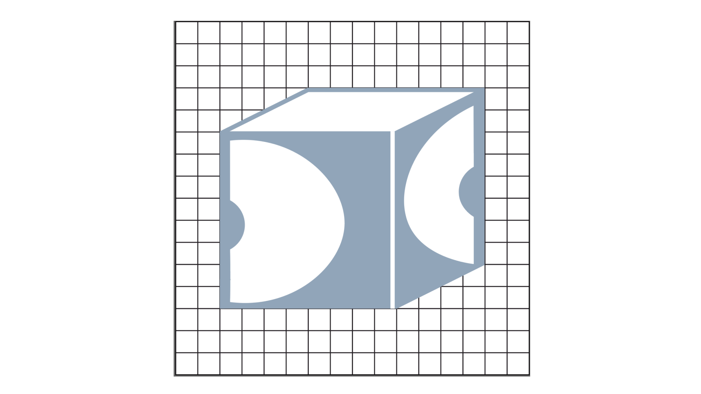
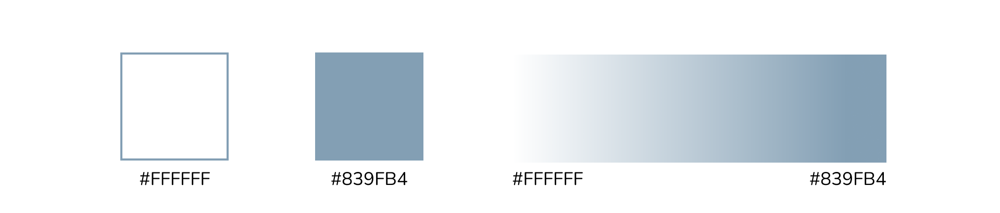

Personal Branding
Challenge
When designing my logo, the point I started with was this: I had to create a logo that reflected me and my style of thinking. To design an original logo, I combined multiple ideas, allowing them to converge at a common point. Once I discovered the final objective I needed to reach, the next step was to put my remaining logo on paper
Meaning
The phrase “Thinking outside the box” has always inspired me. Throughout my life, including my years of work after university and my college education, this has been true. Due to my diverse educational background and experience in various fields, I am able to see situations from multiple perspectives. That’s why I decided to incorporate the box symbol in my logo. I wanted to customize it by placing the first letters of my name and surname on the surface of the box. These letters are the letters D and C.
Inspiration
A closed box symbol reminds me to always remember the importance of thinking outside the box.
Logo
After many logo designs and countless different versions, I decided that this logo was the best.
Colour
My second name means sea in my native language. The sea evokes a sense of vastness and boundlessness, calling forth new ideas and possibilities. In connection with thinking outside the box, I envisioned the box, which is the central object, as a window opening to a sea filled with fresh ideas. Therefore, I wanted to use a colour that resonates with the sea and water.
Conclusion
In conclusion, my logo represents who I am as a creative thinker, always inspired to explore beyond limits and seek innovative solutions.
My Other Projects
You can access my other projects by clicking on the button below.